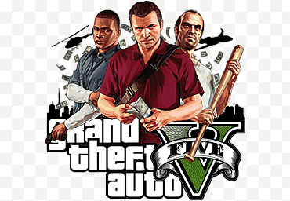
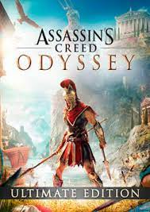

- Grand Theft Auto V 
- Batman: Arkham City
- Assassins Creed Odyssey 
- God of War
- Marvels Spider-Man
O mundo aberto da Rockstar games que gerou sucesso de crítica chega a uma nova geração. Entre nas vidas de três criminosos muito diferentes, Michael, Franklin e Trevor, enquanto eles arriscam tudo em uma série de assaltos ousados que podem garantir o resto de suas vidas

Após o incidente no Asilo Arkham, a enorme Arkham City foi construída para alojar todos os criminosos de Gotham City. Bruce Wayne começa uma campanha contra tal prisão e é preso dentro dela, e de lá, ele deve descobrir o que Hugo Strange está planando e o que seria o Protocolo 10.
Grécia, século V a.C. Kassandra é uma mercenária de sangue espartano, condenada à morte pela família, e terminando sendo expulsa para o exílio. Agora, ela embarcará em uma jornada épica para se tornar uma heroína destemida e lendária – e descobrirá a verdade sobre sua misteriosa linhagem.

Baseada em distintas mitologias, a história segue Kratos, um guerreiro espartano que foi levado a matar sua família por seu antigo mestre, o deus da guerra Ares.

É um Peter Parker experiente, que domina melhor a arte de combater os grandes criminosos na cidade de Marvel's New York. Ao mesmo tempo, ele está tendo dificuldades para equilibrar sua vida pessoal caótica e sua carreira, tudo isso enquanto o destino de milhões de civis está em suas mãos.